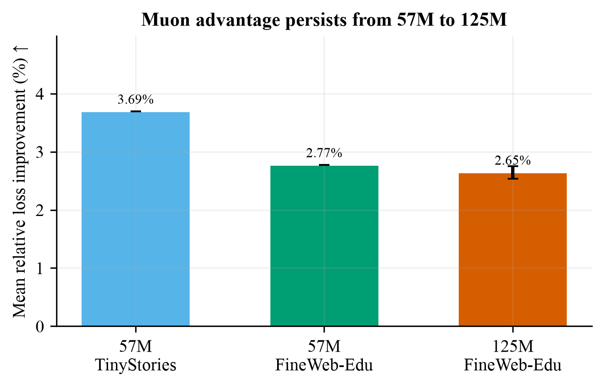
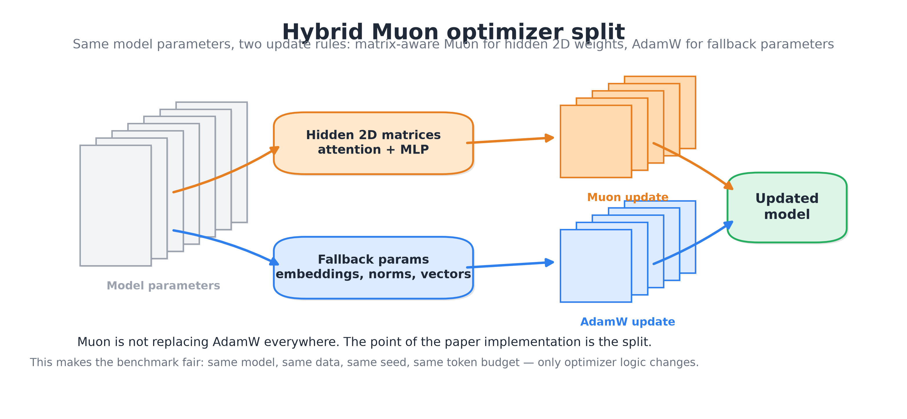
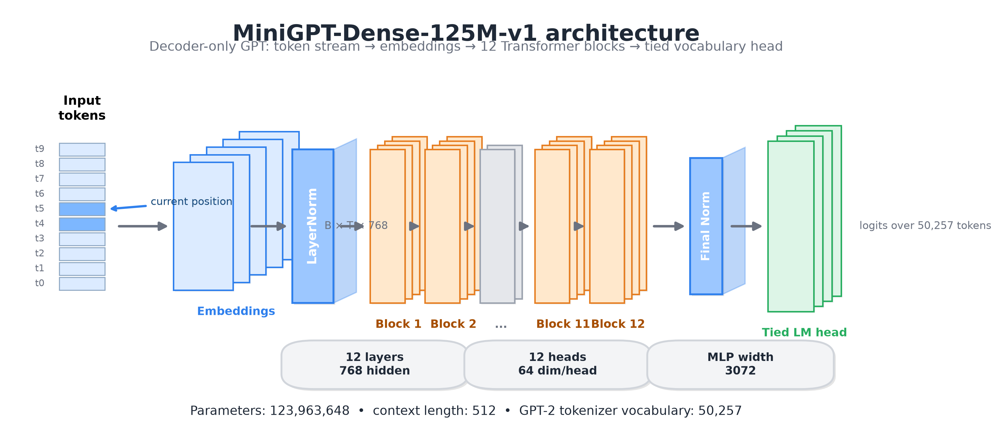
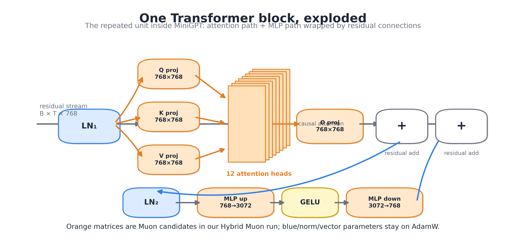
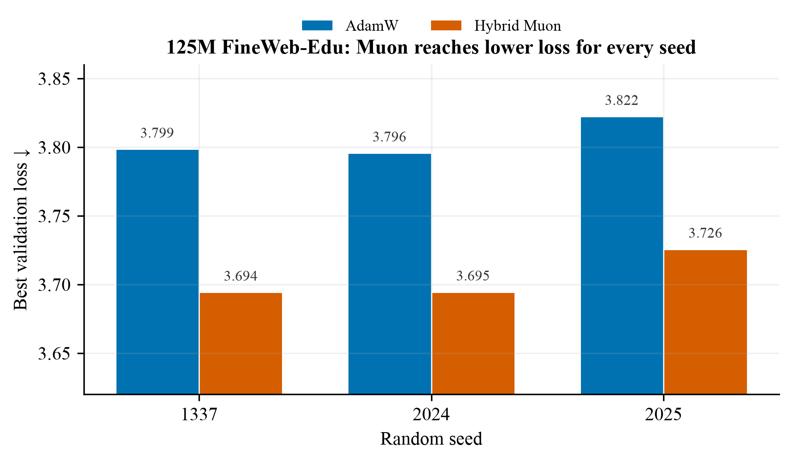
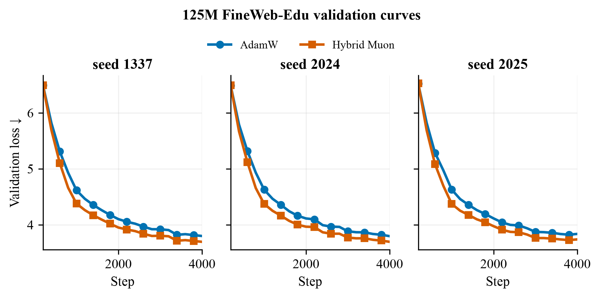
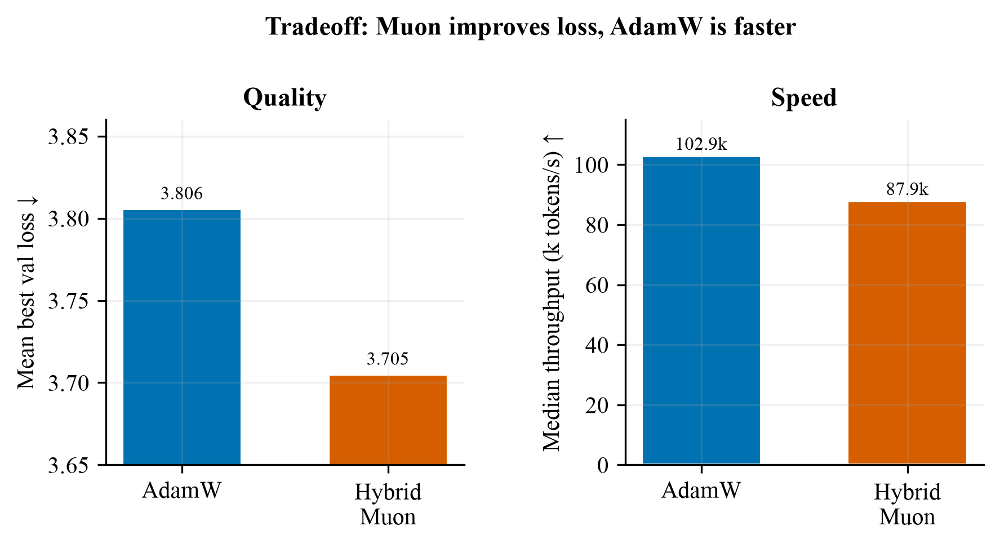
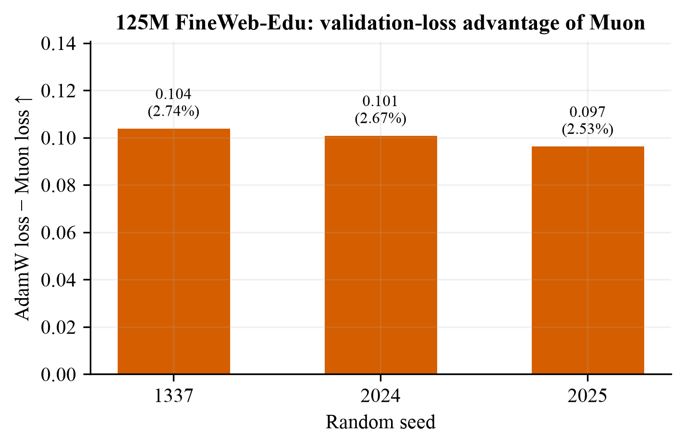

We compared AdamW against Hybrid Muon for decoder-only MiniGPT pretraining. Across a narrow short-story corpus and a broader educational web-text cache, Hybrid Muon reached lower validation loss at matched model, seed, batch, and token-budget settings.

The benchmark isolates one question: if the model, data, seed, batch size, and token budget are held fixed, does changing the optimizer from AdamW to Hybrid Muon change validation loss?
Hybrid Muon is not Muon applied to every parameter. It is a split optimizer: Muon handles selected hidden two-dimensional matrix weights, while AdamW handles embeddings, normalization parameters, vectors, scalars, and fallback parameters.
| Parameter group | Optimizer | Why |
|---|---|---|
| Attention Q, K, V, O projection matrices | Muon | Large hidden 2D matrices where matrix-aware updates are meaningful. |
| MLP up and down projection matrices | Muon | Large 2D matrices mapping 768 → 3072 → 768. |
| Token embeddings and position embeddings | AdamW | Embedding tables are treated as fallback parameters in this implementation. |
| LayerNorm weights, biases, vectors, scalars | AdamW | Non-matrix or small parameters do not use Muon in this hybrid recipe. |

The experiment uses decoder-only GPT-style models implemented in PyTorch. The main scale result uses MiniGPT-Dense-125M-v1, a GPT-2-small-style configuration with context length 512.
| Dimension | Value |
|---|---|
| Parameters | 123,963,648 |
| Layers | 12 |
| Hidden size | 768 |
| Attention heads | 12 |
| Head dimension | 64 |
| MLP width | 3072 |
| Context length | 512 |
| Tokenizer vocabulary | 50,257 |


The report should state cache size and consumed-token budget separately. Cache size describes how much tokenized data was available. Tokens seen describes how much each training run actually consumed.
| Dataset cache | Training tokens in cache | Validation tokens in cache | Role in report |
|---|---|---|---|
| TinyStories | 473,992,236 | 4,765,918 | Narrow short-story corpus, used in 57M runs. |
| FineWeb-Edu sample-10BT extract | 500,000,000 | 5,000,000 | Broader educational web-text cache, used in 57M and 125M runs. |
| Control | Value |
|---|---|
| Effective batch tokens | 65,536 |
| 4000-step tokens per run | 262,144,000 |
| Validation tokens per evaluation | 262,144 |
| 125M benchmark seeds | 1337, 2024, 2025 |
| Precision | bf16 |
| Hardware | Single NVIDIA L40S |
The strongest result is the 125M, 3-seed FineWeb-Edu benchmark. Hybrid Muon reached lower validation loss in every seed-matched pair.


| Metric | AdamW | Hybrid Muon | Delta |
|---|---|---|---|
| Mean best validation loss | 3.8056 ± 0.0146 | 3.7049 ± 0.0181 | 0.1007 ± 0.0038 |
| Mean relative improvement | — | 2.65% | Muon lower |
| Median throughput | ≈102.9k tokens/s | ≈87.9k tokens/s | AdamW faster |
| Max allocated GPU memory | 9.63 GB | 9.29 GB | Similar |


| Dataset | Steps | Seeds | AdamW mean±std | Hybrid Muon mean±std | Relative improvement |
|---|---|---|---|---|---|
| TinyStories | 4000 | 3 | 1.4658 ± 0.0028 | 1.4116 ± 0.0016 | 3.69% |
| FineWeb-Edu-500M | 4000 | 3 | 3.9747 ± 0.0150 | 3.8645 ± 0.0144 | 2.77% |
| FineWeb-Edu-500M | 8000 | 1 | 3.7377 | 3.6614 | 2.04% |
The evidence is strong enough for a technical report, but not broad enough for a universal optimizer claim.
The next step is not automatically a bigger model. The current evidence is already sufficient for a credible engineering report. If more GPU time is available, the best follow-up is a longer 125M FineWeb-Edu run or a 125M TinyStories run, not an immediate jump to a much larger model.
reports/57m_adamw_vs_muon_results.mdreports/125m_adamw_vs_muon_3seed_results.mdgpu_benchmark/downloaded_runs/compare_125m_finewebedu_3seed_4000s/figures/gen_fig_muon_benchmark.pyfigures/gen_3d_paper_schematics.pyValidation loss - loss measured on held-out tokens not used for gradient updates. Lower is better.
Seed - a fixed random initialization/control value that makes optimizer comparisons more reproducible.
Token budget - the number of training tokens processed by a run. In the 4000-step runs, this is 262.14M tokens.
Hybrid Muon - Muon applied to hidden 2D matrix weights, with AdamW used for fallback parameters.
python3 figures/gen_fig_muon_benchmark.py
python3 figures/gen_3d_paper_schematics.py
python3 gpu_benchmark/compare_optimizer_runs.py --help